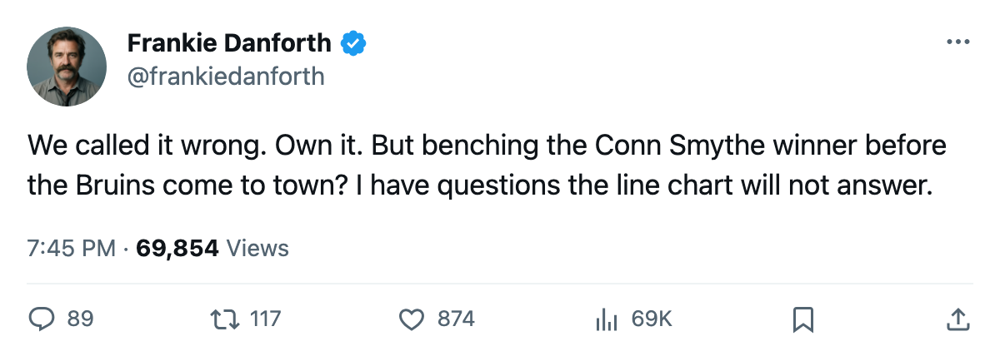
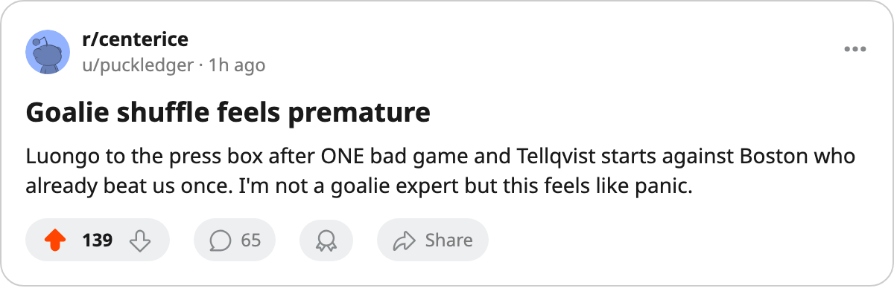

TOR
TOR DET
DETDANFORTH: Code Yellow, a miss to own, and a goalie chair that just opened
We said the Leafs earn a point against Detroit. They earned zero. The Cup-winning netminder sits, and Boston arrives with a win in the season series.
 Frankie DanforthColumnist · Queen City Telegram
Frankie DanforthColumnist · Queen City Telegram
Code Yellow

We missed. The desk wrote that Toronto would earn at least 1 point against Detroit on Tuesday. The Leafs scored one goal in regulation and earned nothing. That is miss number 18 against 67 hits this season.
One goal. Against a Detroit club missing  Derian Hatcher79 to a concussion and
Derian Hatcher79 to a concussion and  Brendan Shanahan80 to a back issue. One goal, and then the season's first regulation loss after a 6-game streak that had us believing we had found the formula.
Brendan Shanahan80 to a back issue. One goal, and then the season's first regulation loss after a 6-game streak that had us believing we had found the formula.
The chair moves
Saturday, Mikael Tellqvist73 starts.  Roberto Luongo95 is undressed. I do not have a quote from the coach. I have a line chart, and it says Tellqvist at 73 overall replaces the man at 95 who won the Conn Smythe in June. The Bureau's Development Index has Tellqvist on the fallers at -5. That is the man I am trusting to stop a Boston squad that already beat us 3-2 this season.
Roberto Luongo95 is undressed. I do not have a quote from the coach. I have a line chart, and it says Tellqvist at 73 overall replaces the man at 95 who won the Conn Smythe in June. The Bureau's Development Index has Tellqvist on the fallers at -5. That is the man I am trusting to stop a Boston squad that already beat us 3-2 this season.
I am not questioning the move because I love Roberto. I am questioning it because  Boston Bruins is 23 points in 17 games, they are 7-3 on the road, and they have one more game to play than we do. A regulation loss Saturday, and the cushion that looked so comfortable three weeks ago turns into a 3-point race with a game in hand for the wrong team.
Boston Bruins is 23 points in 17 games, they are 7-3 on the road, and they have one more game to play than we do. A regulation loss Saturday, and the cushion that looked so comfortable three weeks ago turns into a 3-point race with a game in hand for the wrong team.
What I keep seeing
 Mats Sundin92 has 12 points in 18 games. He is 34 years old.
Mats Sundin92 has 12 points in 18 games. He is 34 years old.  Brad Richards87 has 11 in the same span on $6.70M. That is what this team does when
Brad Richards87 has 11 in the same span on $6.70M. That is what this team does when  Marian Gaborik99 is on the shelf with a leg that keeps him out until Christmas: the first line produces, the second produces, and the third and fourth give you 14 combined points from four men.
Marian Gaborik99 is on the shelf with a leg that keeps him out until Christmas: the first line produces, the second produces, and the third and fourth give you 14 combined points from four men.
Petr Chlup87 has 15 points in 18 games. He is 19 years old and earning $2.34M. He is the reason this team still sits at 28 points and not 24.
The schedule does not get easier.  Philadelphia Flyers visits Tuesday.
Philadelphia Flyers visits Tuesday.  Ottawa Senators hosts Thursday.
Ottawa Senators hosts Thursday.  Washington Capitals comes Saturday again next weekend. These are the games that decide whether 28 points becomes a comfortable perch or a warning shot.
Washington Capitals comes Saturday again next weekend. These are the games that decide whether 28 points becomes a comfortable perch or a warning shot.
Boston already beat us once. They are on a 2-game losing streak and they will come in hungry. I want my goaltender back. I want my 99 back. I want the $11.90M earning his money on the ice and not the press-box seat. Code Yellow. Nothing more yet. But the Yellow is deeper than it was on Monday.

